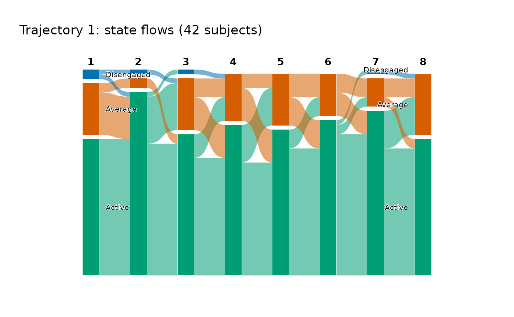

Draws how subjects move between states from one time point to the next,
using cograph::plot_alluvial() for aggregated bands and
cograph::plot_trajectories() for individually tracked lines. Sequence
index, distribution, and heatmap views remain with plot() and
Nestimate; flow_plot() answers the complementary question of where
movement goes, which a sequence plot ordered by similarity cannot show.
Usage
flow_plot(x, ...)
# S3 method for class 'vasstra_sequences'
flow_plot(
x,
type = c("alluvial", "individual"),
colors = NULL,
main = NULL,
color_by = NULL,
bundle = "auto",
bundle_max = 50,
...
)
# S3 method for class 'vasstra_trajectories'
flow_plot(
x,
type = c("alluvial", "individual"),
colors = NULL,
main = NULL,
color_by = NULL,
bundle = "auto",
bundle_max = 50,
group = NULL,
...
)
# S3 method for class 'vasstra'
flow_plot(x, ...)Arguments
- x
A
vasstra_sequences,vasstra_trajectories, orvasstraobject.- ...
Additional arguments passed to
cograph::plot_alluvial()orcograph::plot_trajectories().- type
"alluvial"(default) for aggregated flow bands whose width is the number of subjects making that move, or"individual"for one line per subject.- colors
Optional colors, one per state, in state order. Defaults to the shared VaSSTra palette.
- main
Optional plot title. A type-specific title is used by default.
- color_by
State that gives a flow its color:
"source"(default for"alluvial") or"destination". Individual lines also accept"first"(the default, coloring each subject by the state they start in) and"last".- bundle
Line bundling for
type = "individual"."auto"(default) bundles only when subjects outnumberbundle_maxlines,FALSEdraws every subject, and a number sets the subjects represented by one line. Ignored bytype = "alluvial".- bundle_max
Largest number of lines drawn before
"auto"bundling starts. Default 50.- group
Optional trajectory label. Restricts the plot to the subjects of one trajectory, which is how a single group's movement is inspected; flow plots draw one panel and cannot be faceted.
Value
A ggplot object. Unlike the base-graphics plot() methods,
which draw immediately and return their tidy data invisibly, this is
returned visibly so that it prints at the console.
Details
State colors, state order, and time labels are taken from the fitted object, so a flow plot is directly comparable with the sequence heatmap and the state profiles.
See also
plot.vasstra_sequences() for the Nestimate sequence views.
Examples
# \donttest{
if (requireNamespace("cograph", quietly = TRUE)) {
data("engagement", package = "VaSSTra")
fit <- vasstra(
engagement,
state_labels = c("Disengaged", "Average", "Active")
)
flow_plot(fit)
flow_plot(fit, type = "individual")
flow_plot(fit, group = "Trajectory 1")
}
#> Using n_states = 3 to match the supplied labels.
#> Selected n_trajectories = 3 (hamming + pam, silhouette = 0.435); see `diagnostics$selection`.

# }